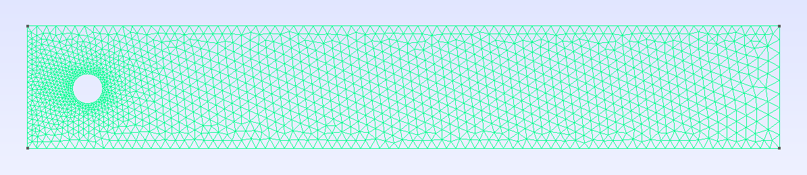

Problem statement
The goal is to solve a time-dependent nonlinear multi-field PDE. As a model problem, we consider a well known benchmark in computational fluid dynamics, the laminar flow around a cylinder for the transient incompressible Navier-Stokes equations. We will solve this problem by building on the previous exercise.
Like in the previous exercise, the computational domain $\Omega$ is a 2-dimensional channel. The fluid enters the channel from the left boundary (inlet) and exits through the right boundary (outlet). The channel has a cylindrical obstacle near the inlet. The domain can be seen in the following figure:

We define $\partial \Omega = \Gamma_{w} \cup \Gamma_{c} \cup \Gamma_{in} \cup \Gamma_{out}$ with $\Gamma_{w}$ the top and bottom channel walls, $\Gamma_{c}$ the cylinder walls, $\Gamma_{in}$ the inlet and $\Gamma_{out}$ the outlet.
Formally, the PDE we want to solve is: find the velocity vector $u$ and the pressure $p$ such that
\[\left\lbrace \begin{aligned} \frac{\partial u}{\partial t} - \Delta u + \mathit{Re}\ (u\cdot \nabla)\ u + \nabla p = 0 &\text{ in }\Omega,\\ \nabla\cdot u = 0 &\text{ in } \Omega,\\ u = u_{in} &\text{ on } \Gamma_{in},\\ u = 0 &\text{ on } \Gamma_{w} \cup \Gamma_{c},\\ n_\Gamma \cdot \sigma = 0 &\text{ on } \Gamma_{out},\\ \end{aligned} \right.\]
where $d=2$ , and $\mathit{Re}$ is the Reynolds number.
The inflow condition is now time-dependent and given by
\[u_{in}(0,y,t) = \left( 4 U_{m} \frac{y(H-y)}{H^2} \xi(t), 0 \right)\]
with $U_{m}=1.5 \ m/s$ the maximum velocity, $H = 0.41 \ m$ the height of the channel and $\xi$ a function
\[\xi(t) = \left\lbrace \begin{aligned} \sin\left(\frac{\pi t}{2 T_{th}}\right) &\text{ if } t \leq T_{th} \\ 1.0 &\text{ if } t > T_{th} \\ \end{aligned} \right.\]
with $T_{th}$ the time it takes for the flow to reach a steady state.
Numerical Scheme
In order to approximate this problem we choose the same formulation as before, namely a formulation based on inf-sup stable $P_{k}/P_{k-1}$ triangular elements with continuous velocities and pressures. The interpolation spaces are defined as follows. The velocity interpolation space is
\[V \doteq \{ v \in [H^1(\Omega)]^d:\ v|_T\in [P_k(T)]^d \text{ for all } T\in\mathcal{T} \},\]
where $T$ denotes an arbitrary cell of the FE mesh $\mathcal{T}$, and $P_k(T)$ is the usual Lagrangian FE space of order $k$ defined on a mesh of triangles or tetrahedra. On the other hand, the space for the pressure is given by
\[Q \doteq \{ q \in C^0(\Omega):\ q|_T\in P_{k-1}(T) \text{ for all } T\in\mathcal{T}\}.\]
The weak form associated to these interpolation spaces reads: find $(u,p)\in U_g \times Q$ such that $[r(u,p)](v,q)=0$ for all $(v,q)\in V_0 \times Q$ where $U_g$ and $V_0$ are the set of functions in $V$ fulfilling the Dirichlet boundary conditions and the homogeneous Dirichlet boundary conditions respectively. The weak residual $r$ evaluated at a given pair $(u,p)$ is the linear form defined as
\[[r(t,(u,p))](v,q) \doteq m(t,(u,p),(v,q)) + a(t,(u,p),(v,q)) + [c(u)](v),\]
with
\[\begin{aligned} m(t,(u,p),(v,q)) &\doteq \int_{\Omega} \frac{\partial u}{\partial t} \cdot v \ {\rm d}\Omega,\\ a(t,(u,p),(v,q)) &\doteq \int_{\Omega} \nabla v \cdot \nabla u \ {\rm d}\Omega - \int_{\Omega} (\nabla\cdot v) \ p \ {\rm d}\Omega + \int_{\Omega} q \ (\nabla \cdot u) \ {\rm d}\Omega,\\ [c(u)](v) &\doteq \int_{\Omega} v \cdot \left( (u\cdot\nabla)\ u \right)\ {\rm d}\Omega.\\ \end{aligned}\]
In this exercise, we will rely on automatic differentiation to compute the necessary jacobians in time and space.
Geometry
Exercise 1
By using the code in the previous exercise, load the mesh from the file `perforatedplatetiny.msh. If your computer is good enough, or if you have access to a cluster, you might want to try the refined model in fileperforatedplate.msh`._
using Gridap, GridapGmsh
using DrWatson
# model =FE spaces
Exercise 2
Define the test FE spaces for the velocity and pressure, using the same discretisations as in the previous exercise.
D = 2
k = 2
# reffeᵤ =
# reffeₚ =
# V =
# Q =Exercise 3
Define the boundary conditions for velocity. You should define three functions `uin,uwanduc` representing the prescribed dirichlet values at $\Gamma_{in}$, $\Gamma_w$ and $\Gamma_c$ respectively._
const Tth = 2
const Uₘ = 1.5
const H = 0.41
ξ(t) = (t <= Tth) ? sin(π*t/(2*Tth)) : 1.0
# u_in(x,t::Real) =
# u_w(x,t::Real) =
# u_c(x,t::Real) =
u_in(t::Real) = x -> u_in(x,t)
u_w(t::Real) = x -> u_w(x,t)
u_c(t::Real) = x -> u_c(x,t)Exercise 4
Define the trial and test spaces for the velocity and pressure fields, as well as the corresponding multi-field spaces.
# U =
# P =
# Y =
# X =Nonlinear weak form and FE operator
As usual, we start by defining the triangulations and measures we will need to define the weak form. In this case, we need to define the measure associate with the bulk $d\Omega$, as well as the measure associated with the outlet boundary $\Gamma_{out}$.
degree = k
Ω = Triangulation(model)
dΩ = Measure(Ω,degree)
Γ_out = BoundaryTriangulation(model,tags="outlet")
n_Γout = get_normal_vector(Γ_out)
dΓ_out = Measure(Γ_out,degree)We also define the Reynolds number and functions to represent the convective term.
const Re = 100.0
conv(u,∇u) = Re*(∇u')⋅uExercise 5
Define the residual $r$ and the TransientFEOperator for our problem.
# m(t,(u,p),(v,q)) =
# a(t,(u,p),(v,q)) =
# c(u,v) =
# res(t,(u,p),(v,q)) =
op = TransientFEOperator(res,X,Y)Solver and solution
Exercise 6
Create the ODE solver. In this exercise you should use the ThetaMethod with $\theta = 0.5$ and a time step size $\Delta t = 0.01$. Create a Newton-Raphson nonlinear solver to solve the nonlinear problem at each time step.
using LineSearches: BackTracking
nls = NLSolver(show_trace=true, method=:newton, linesearch=BackTracking())
# Δt =
# θ =
# ode_solver =We can then solve the problem and print the solutions as follows:
t₀ = 0.0
T = Tth
u₀ = interpolate_everywhere([VectorValue(0.0,0.0),0.0],X(0.0))
xₕₜ = solve(ode_solver,op,t₀,T,u₀)
dir = datadir("ins_transient")
!isdir(dir) && mkdir(dir)
createpvd(dir) do pvd
for (t,xₕ) in xₕₜ
println(" > Computing solution at time $t")
uₕ,pₕ = xₕ
file = dir*"/solution_$t"*".vtu"
pvd[t] = createvtk(Ω,file,cellfields=["u"=>uₕ,"p"=>pₕ])
end
endThis page was generated using Literate.jl.